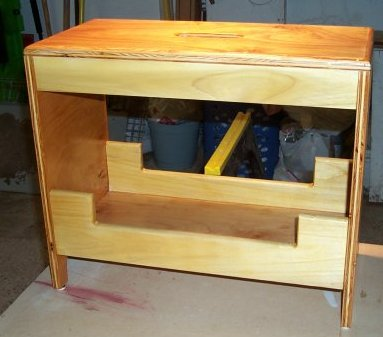
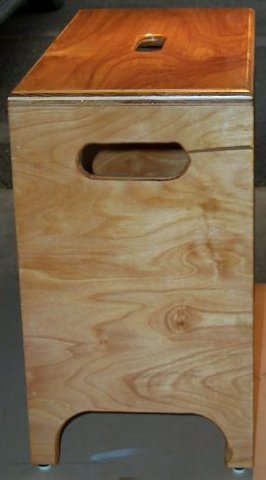

ThunderEagle's Nest

 The plans for this was in Lowe's free wood working magizine, "The Wood Post". The Summer 2003 edition. When I first received it I figured it was nothing more than some kind of ad circular. After it had sat on my computer desk for a few days, I actually looked at it and this looked nifty so I gave it a shot. The sides, top, and bottom are made from 3/4" Birch Plywood. The Side pieces are made of Poplar.
I used Minwax Finish #209 (Natural) and then coated with Helmsman Spar Urathane. I really like the way the wood looks with that combination. For all you beginners out there, this is a very simple, easy, and relatively cheap project.